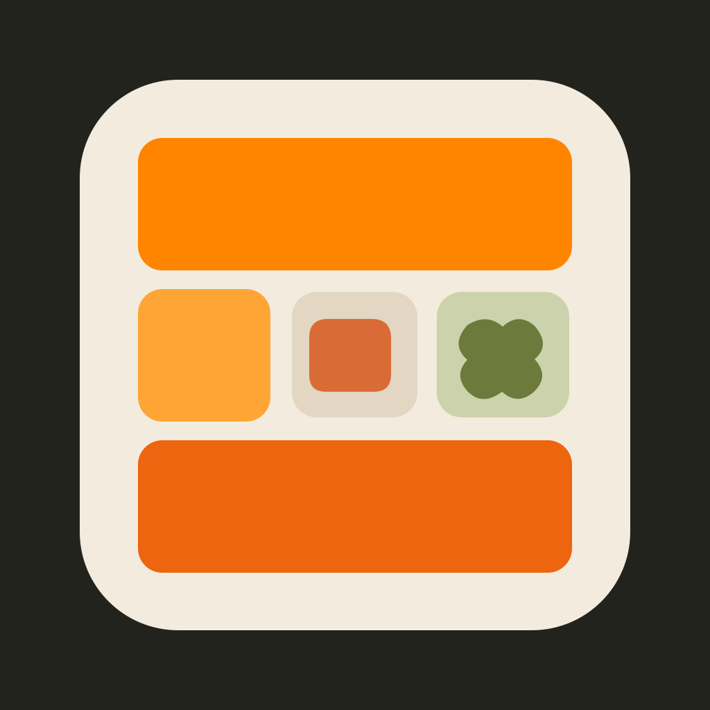
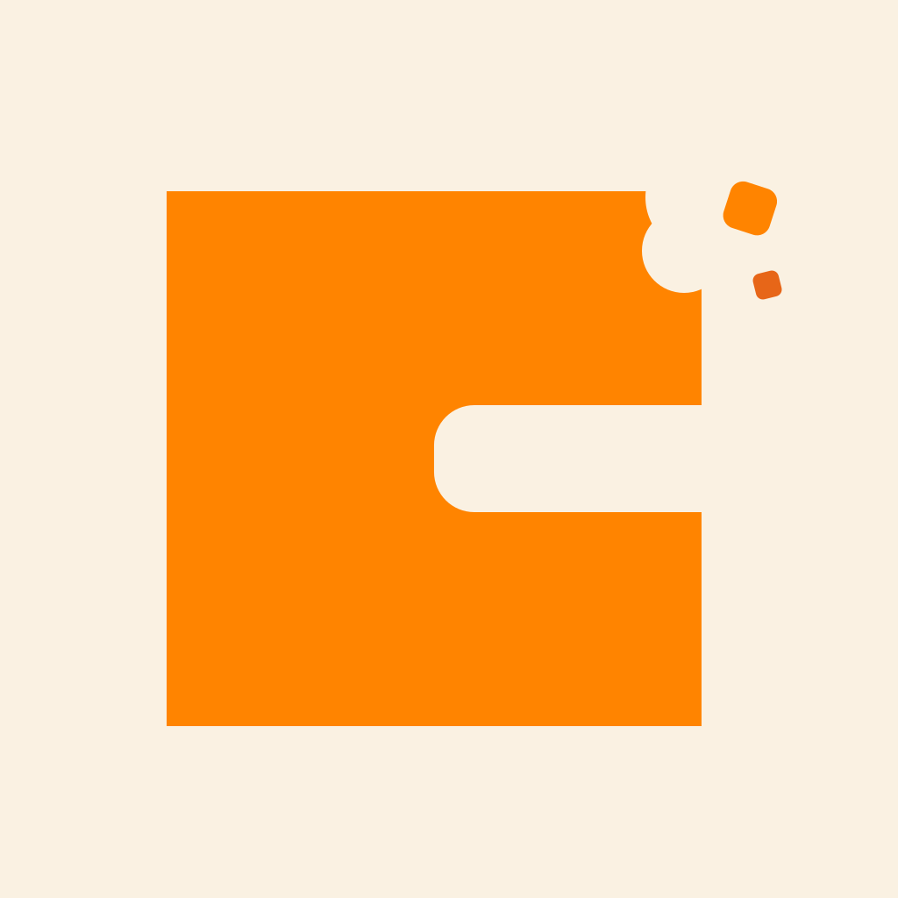
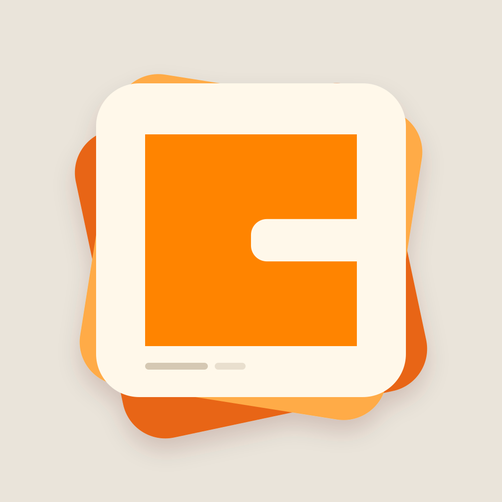
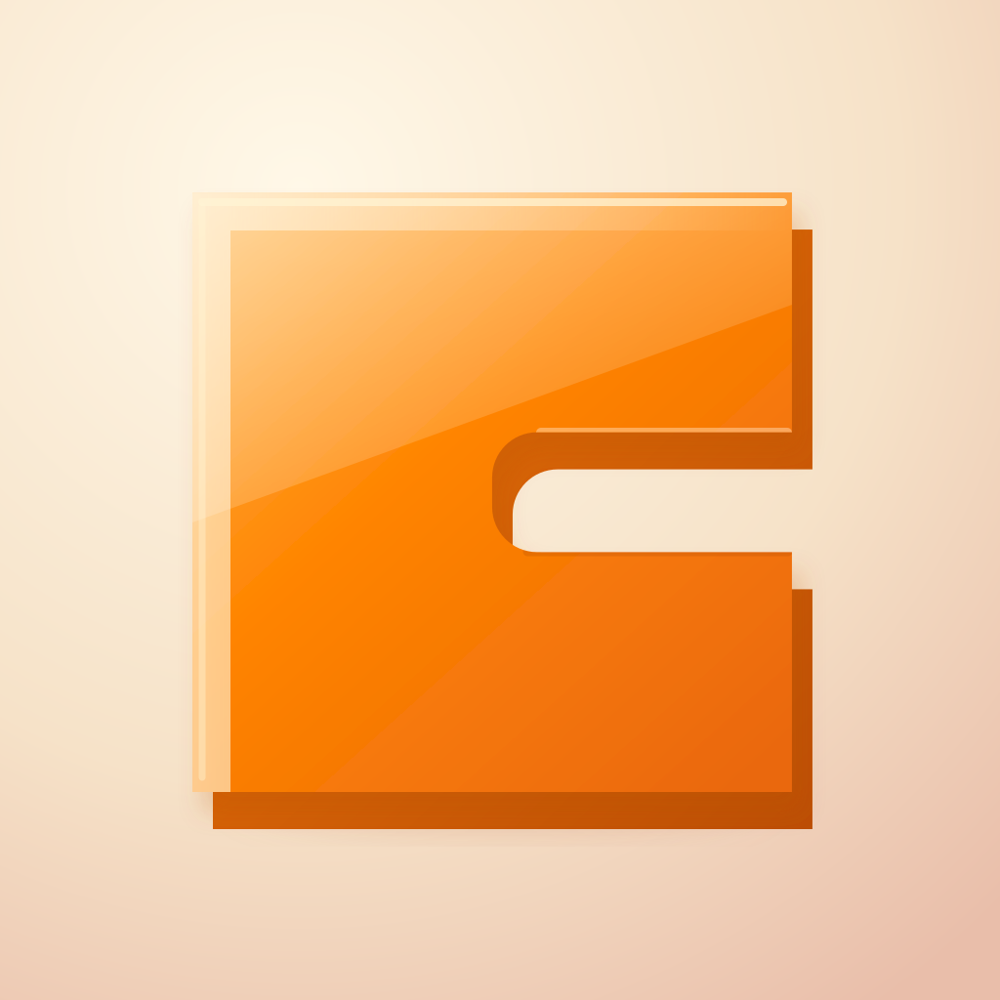
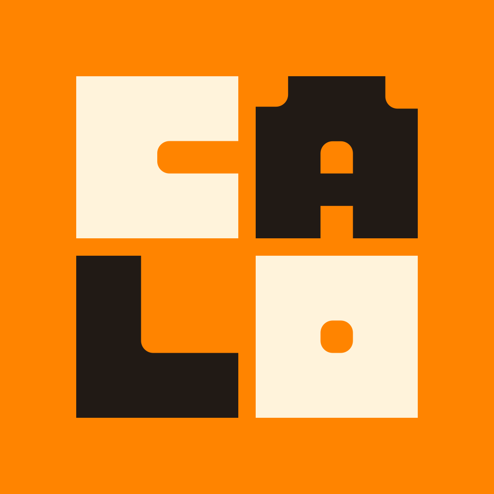

01
The Stamp
The exact C, oversized in ink on the original orange. Bold and immediate.
Small-size preview
The exact C, oversized in ink on the original orange. Bold and immediate.

The C becomes a meal tray, with three blocks and a little food tucked inside.

A little nibble turns the geometric letter into something edible and playful.

Meal logs as a tactile stack of cards. Warm, useful, and a little collectible.

A sculptural, glossy C with amber depth. The most iOS-inspired treatment.

The first four letters of the supplied wordmark become a compact poster-like mark.
All six use the original orange and geometric lettering. The artwork is editable SVG; rounded corners are shown only for the home-screen preview.